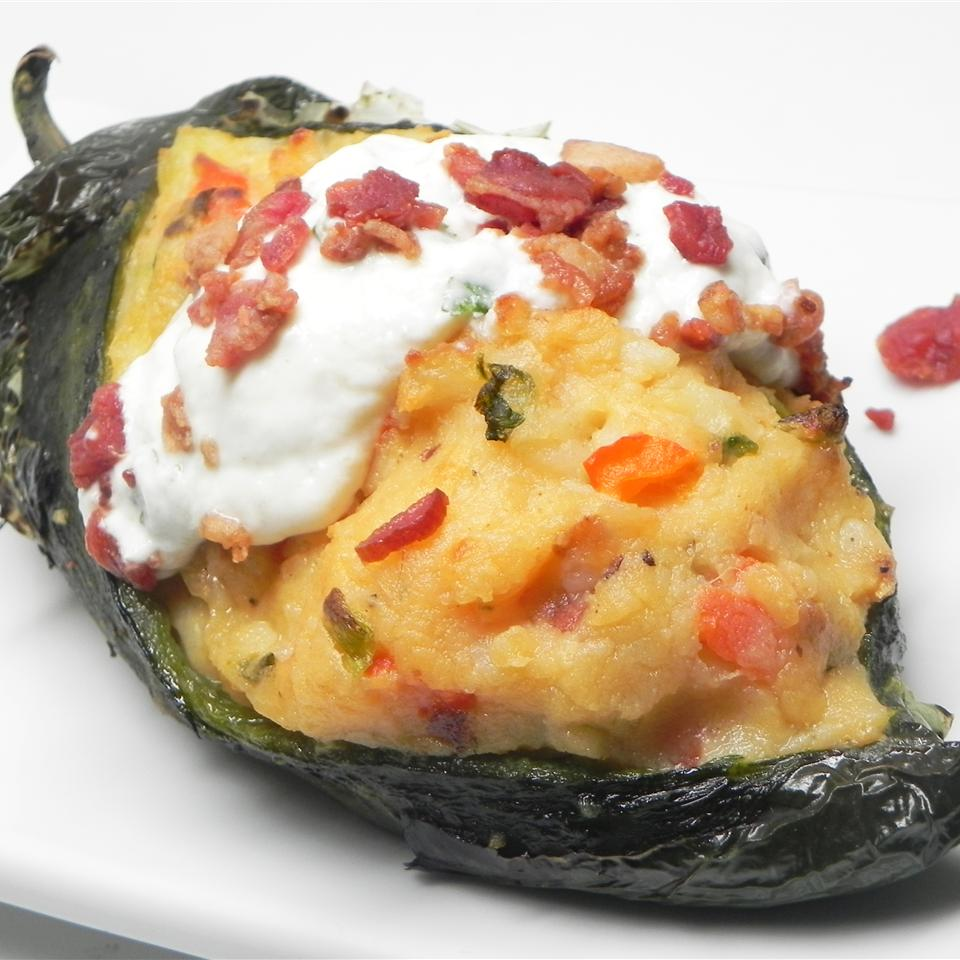

Potato-Stuffed Poblanos
Reverse Potato Skins

Do you love potato skins?
Well these stuffed peppers are a great way to spice up the traditional dish!
Makes 8 servings
Ingredients
Sauce:
- ½ cup sour cream
- ¼ cup salsa verde
- 1 tablespoon chopped fresh cilantro
Potatoes:
- 4 russet potatoes, peeled and chopped
- 8 poblano peppers
- 8 slices bacon
- ½ red bell pepper, diced
- ½ onion, diced
- 2 cloves garlic, minced
- ½ cup shredded Cheddar cheese
- ½ cup milk
- 3 tablespoons butter
Directions
- Mix sour cream, salsa verde, and cilantro together in a bowl
until sauce is evenly mixed; refrigerate.
- Place potatoes into a large pot and cover with salted water;
bring to a boil. Reduce heat to medium-low and simmer until tender,
about 10 minutes. Drain and cool in a large bowl.
- Set oven rack about 6 inches from the heat source and preheat
the oven's broiler. Line a baking sheet with aluminum foil and place
peppers on the baking sheet.
- Cook under the preheated broiler until the skin of the peppers
has blackened and blistered, 3 to 4 minutes. Place blackened peppers
into a bowl and tightly seal with plastic wrap. Allow peppers to steam
as they cool, about 20 minutes.
- Place bacon in a large skillet and cook over medium-high heat,
turning occasionally, until evenly browned, about 10 minutes. Reserve
1 tablespoon bacon grease in the skillet. Drain bacon slices on paper
towels and chop.
- Combine red bell pepper, onion, and garlic in the skillet with
reserved bacon grease; cook and stir over medium heat until vegetables
are softened, 4 to 6 minutes.
- Mix 1/2 of the bacon, red bell pepper mixture, Cheddar cheese,
milk, and butter into the potatoes; mash until well blended.
- Remove skins from the roasted poblano peppers. Make a small
cut in each pepper and scrape out seeds. Stuff peppers with potato
mixture and top with remaining bacon and sauce.
Nutrition Facts
Per Serving: 277 calories; protein 10.4g;
carbohydrates 27.2g; fat 14.8g; cholesterol 38.1mg; sodium 351.3mg.
Return Home